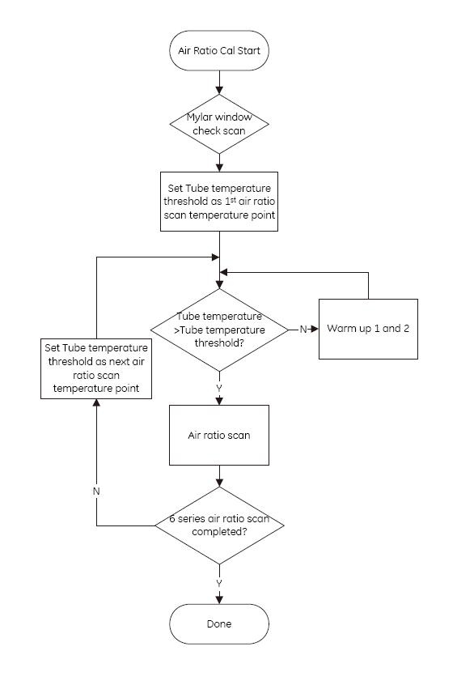

Proprietary to General Electric
Direction 5196839-800, Rev# 6
RT16 and Xtra Service Info Adv
Proprietary to General Electric |
The Air Ratio Cal and SPECIAL Fast Cal are preparation functions, which can generate new Air Ratio Cal vector by the same principle. The vector is used in the preprocessing stages of image reconstruction to maintain optimal image quality.
For customer usage, the vector is generated by the [SPECIAL Fast Cal] in [Daily Prep] . For service usage, please select [Air Ratio Cal] from [Scanner Utilities] . The vector should be updated every 4 weeks, the system will propose user to schedule to run SPECIAL Fast Cal in the 5th week. If it isn’t run during the 5th week, small focal spot will be limited to use.
The illustration 1 describes the sequence of actions when Air Ratio Cal is selected.
The Air Ratio Cal includes additional heating scans required for cal scans. Two warmup protocols are used to make the Air Ratio Cal calibration scan at required temperature.
The calibration does air scan series from cold to hot tube temperature. There are 6 tube temperature thresholds for air scan. To certain temperature, the air scan sets will be performed. After completed scan at this temperature point, air ratio warmup 1 and air ratio warmup 2 scans will be used to warm up the tube to higher temperature for next air ratio scan temperature.
Media File 1: Special FastCal process

Illustration 1: Special FastCal process
